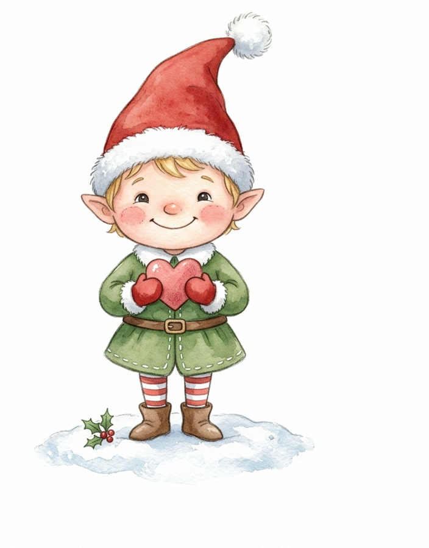
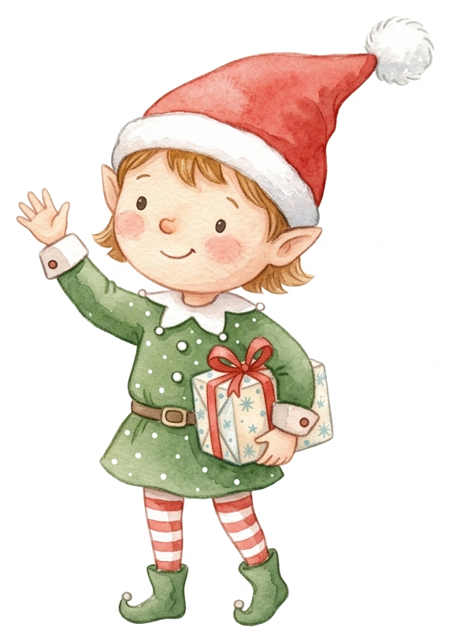

Printable kit · Ages 3 to 8 · December
The Kindness
Elf Kit
The elf tradition you'll actually enjoy. Any little toy becomes your Kindness Elf, with one tiny kind mission each morning. No mess, no midnight flour, no special doll.
20 pages · US Letter + A4
For grown-ups
How the Kindness Elf works
From December 1 to 24, your child finds a note from the Kindness Elf with one small, kind thing to do. Read it together, do it together, and color one circle on the tracker. Everything on the cut-out notes is written for your child, so they can read it themselves.
1
Choose your elfAny soft toy or figure you already have can be your Kindness Elf. Fill in the elf passport together.
2
Print and cutPrint the notes on paper or cardstock and cut them apart (4 per page). Keep them in an envelope out of sight.
3
One note a dayEach evening, put the next note next to the elf. In the morning, read it together. Most missions take five minutes and cost nothing.
4
CelebrateColor a circle on the tracker. On Christmas Eve, read the goodbye letter and give the "I was kind" certificate.
Forgot a note?
Use the lifesaver letters: "I was running late" and "Don't worry, my magic is fine" (for when someone touches the elf).
Make it yours
Start any day in December. Skip any mission that doesn't fit and use the blank notes and 30 extra ideas.
Hello from the North Pole!
Hi, friend! Santa sent me to visit you this December. I'm not here to watch, I'm here to help.
Every morning I'll leave you one kind mission. Every kind thing you do fills the North Pole with Christmas magic.
Let's make this the kindest Christmas ever!
Love, your Kindness Elf
Color one circle a day
My kindness tracker
After each kind mission, color one circle. Can you fill all 24 before Christmas?
1
2
3
4
5
6
7
8
9
10
11
12
13
14
15
16
17
18
19
20
21
22
23
24
I was running late!
Good morning! The reindeer and I were practicing for the big night and I lost track of time.
Today's kind mission: help someone without being asked. I'll be on time tomorrow!
Love, your Kindness Elf
Don't worry, my magic is fine!
Someone touched me yesterday, but don't worry: kindness magic is strong, and a hug never hurts an elf.
Today's kind mission: say something kind to the person who touched me. See you tomorrow!
Love, your Kindness Elf
A note from Santa's workshop
Twelve kind missions done! Everyone at the workshop is talking about you.
Keep going, little friend. Your kindness is the best present under the tree.
Love, your Kindness Elf
Bonus
Christmas kindness cards
Bonus missions for a cozy day at home. Pick one and do it together.
BONUS MISSION
Make hot cocoa for the family
Do it together
BONUS MISSION
Wrap a present for someone else
Do it together
BONUS MISSION
Make a card for a neighbor
Do it together
BONUS MISSION
Sing carols for a grandparent (on a video call too)
Do it together
Cut out the cards and keep them for a quiet day.

Merry Christmas!
Tonight I fly back to the North Pole with Santa, with a sack full of your kindness.
Thank you for every hug, every smile and every kind thing you did. Keep being kind all year long.
See you next December!
Love forever, your Kindness Elf
Official North Pole award
I Was Kind!
This certificate goes to
for 24 days of December kindness. Everyone at the North Pole is proud of you!
Date ____________ Signed: Your Kindness Elf
For grown-ups
30 more tiny kindness ideas
Swap in any of these when a note doesn't fit your day. Keep missions short, concrete and done together.
- Hold the door for someone
- Help carry the groceries
- Give your sibling the first turn
- Say “please” at every meal
- Bring a grown-up a glass of water
- Help feed the pet
- Tidy up the bookshelf
- Make a get-well drawing
- Leave a sticker on someone’s pillow
- Call a grandparent and sing
- Give a compliment: “I like your hat!”
- Help fold the towels
- Put a toy back for someone else
- Make a picture for the school bus driver
- Comfort a sad friend
- Hang up your coat and someone else’s
- Wash plastic cups in the sink
- Share your snack
- Help make breakfast toast
- Give the plants a drink
- Clean up crayons without being asked
- Say “sorry” and hug
- Wave at a neighbor’s window
- Make a bracelet for a friend
- Help match the socks
- Let someone else choose the song
- Brush the dog or the teddy
- Fill the bird feeder
- Warm up someone’s slippers
- Give a good-night hug to everyone
Pair it with
Our Kindness Snowman (January), Kindness Cupid (February) and Kindness Reindeer kits follow the same 5-minute idea. Find them in our shop.